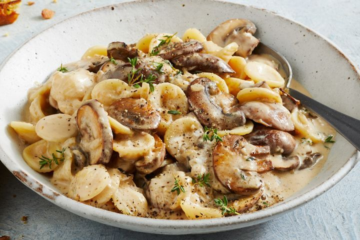

Creamy French onion pasta

Description
I have french onion dip in my fridge, but no one is eating it
It tastes kinda horrible, so I have had this recipe saved in hopes of redeeming this horrid dip
will report back...
Ingredients
- 400g dried orecchiette pasta
- 60g salted butter, melted
- 1 tbsp chopped fresh continental parsley leaves
- 3 garlic cloves, crushed
- 2 tbsp olive oil
- 1 brown onion, finely chopped
- 400g Swiss brown mushrooms, thickly sliced
- 250mL (1 cup) Massel Organic Beef Liquid Stock
- 125mL (½ cup) light thickened cooking cream
- 1 small baguette, cut into 8 slices
- 200g tub French onion dip
- 40g (½ cup) grated parmesan
- Fresh thyme sprigs, to serve (optional)
Steps
- Cook the pasta in a large saucepan of salted boiling water for 2 minutes less than packet directions. Ladle 250mL (1 cup) pasta water into a jug and reserve. Drain the pasta.
- Meanwhile, combine the butter, parsley and 1 garlic clove in a small bowl. Reserve. Heat the oil in a large frying pan over medium heat. Add the onion, mushroom and remaining garlic. Cook, stirring, for 5 minutes or until tender.
- Add the stock, cream and pasta. Bring to the boil. Reduce heat to medium-low. Simmer for 3 minutes or until sauce thickens and pasta is cooked, adding some reserved pasta water if too thick. Remove from heat. Toast bread and while warm, lightly brush 1 side of each slice with butter mixture. Stir dip and cheese through pasta. Season. Divide among serving bowls. Top with thyme, if using. Serve with garlic toast.